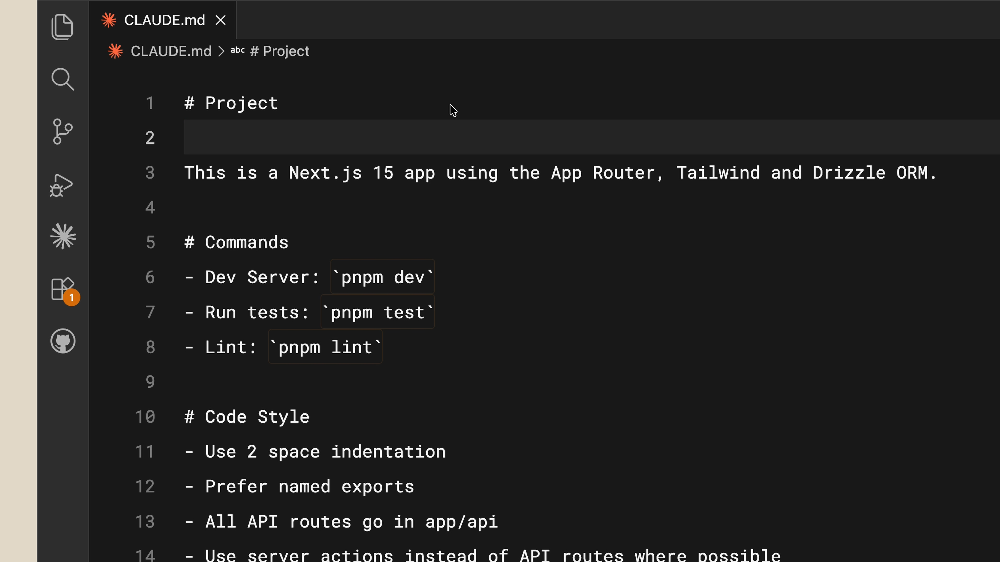

01 — Save to memory
修正内容をメモリに保存する
Claude に同じ修正を繰り返しているなら——たとえば「API ルートではなく常に Server Actions を使え」と毎回言っているなら——そのルールをメモリに保存するよう明示的に頼む。次にプロジェクトを開いたときには把握している。
Lesson 06 / Anthropic 公式動画
03:01 · 全文書き起こし＋公式コース本文より
プロジェクトのルートに置く1枚の Markdown が、Claude Code に永続的な記憶を与える。動画の言い方を借りれば、それはコードベースのオンボーディング資料。フラストレーションの溜まるセッションと生産的なセッションを分けるのは、たいていここ。
CLAUDE.md がない状態で Claude Code を開くと、毎回まっさらから始めることになる。動画が挙げるのは3つの再発見コスト。
そして最後に、いちばん厄介なものが加わる——ときには推測をしなければならない。それが、Claude を正しい方向に導くことを難しくする。
正体は素朴だ。プロジェクトのルートに置く Markdown ファイルで、Claude Code はセッションを開始するたびに自動的にそれを読む。
言ってしまえば、CLAUDE.md の内容はあなた自身のプロンプトに追記される。
— 動画内 / 00:44
この一文が仕組みのすべてで、だからこそ短く保つことが効いてくる。書いた分だけ、毎回のプロンプトが長くなる。
ゼロから書く必要はない。/init を実行すれば、Claude があなたのコードベースを見て生成してくれる。
動画で実際に開かれるファイルの中身がそのまま手本になる。
「これは App Router、Tailwind、Drizzle ORM を使った Next.js 15 のアプリ」——1行で全体像。
開発サーバー、テスト実行、Lint。プロジェクト固有の呼び出し方を書いておく。
インデントは2スペース、名前付きエクスポートを好む。
API ルートはすべて app/api に置く、可能な限り API ルートではなく Server Actions を使う。

CLAUDE.md の実例。見出しは Project / Commands / Code Style の3つだけ。効果もはっきり述べられる。この状態で React コンポーネントの作成を頼めば、Claude は最初から Tailwind（あるいはあなたが使っている CSS フレームワーク）でスタイルを当てる方法を知っている。まず全体を理解しにいく手間がない分、初手から仕事が良くなる。
CLAUDE.md はバージョン管理にコミットできる（し、そうすべき）。チーム全体がその恩恵を受けられる。ただし、誰のためのものかによってメモリファイルには階層がある。
「他の人にも当てはまるか」だけで決まる。プロジェクトの事実はプロジェクトへ、あなたの癖はユーザーへ。ここを混ぜると、チームの誰かにとって邪魔なルールが共有ファイルに紛れ込む。
01 — Save to memory
Claude に同じ修正を繰り返しているなら——たとえば「API ルートではなく常に Server Actions を使え」と毎回言っているなら——そのルールをメモリに保存するよう明示的に頼む。次にプロジェクトを開いたときには把握している。
02 — @ reference
参照してほしいドキュメントがプロジェクト内にあるなら、@ 記号とファイルパスを使う。中身を丸ごと転記せずに、必要なときだけ読ませられる。
03 — Start empty
プロジェクトの開始時はあえて CLAUDE.md 無しで始めることが推奨される。そうすると、どこで常に軌道修正が必要になるかが見えてくる。これがファイルをコンパクトに、必要な情報だけに保つ方法。準備ができたら /init。
## README.md
Please read if you need more info: @README.md

フラストレーションの溜まるセッションと生産的なセッションの違いは、しばしばコンテキストにある。CLAUDE.md は、そのコンテキストを渡す手段。
始め方も一行で示される——まずスタック、好み、コマンドから始めて、そこから徐々に育てていく。
YouTube の自動生成字幕から取得したもの。claw.md は CLAUDE.md の音声認識ミス。
One of the most useful parts of Claude Code is the claw.md file. >> [music] >> It gives Claude Code persistent memory about your project. >> [music] >> When you open up Claude Code without a claw.md file, it's like it has to start
fresh every single time. It has to re-explore your code base, understand what dependencies are needed, and the features that are already implemented. Sometimes it has to make assumptions, which makes it harder for us to steer
Claude in the right direction. But, that's where claw.md comes in. It's a markdown file that you add to the root of your project, and Claude Code reads it automatically every time you start a
session. It's like an onboarding script for your code base. Simply put, the contents of claw.md file are appended to your own prompt. You can run the {slash} init command, which will make Claude generate one based off of
your code base. So, let's have a look at one. This is a Next.js 15 app using the app router, Tailwind, and Drizzle ORM. Command, dev server, run tests, lint, code style, use two-space indentation,
prefer named exports, all API routes go in app/{slash}api, use server actions instead of API routes where possible. And it's pretty straightforward. Now, if I ask Claude Code to create a React
component, it knows how to style it with Tailwind or any other CSS framework that I'm using. We can see that Claude does a better job at doing his job right off the bat versus having to understand
where everything is at first. And before you ask, the answer is yes. You share this in your version control for your team to use, but there's actually a hierarchy of memory files depending on who it's for. So, first you
have your project-level claw.md that lives in the root directory of your project. You have a user-level claw.md that lives in your configuration folder. This one is just for you and goes across
all your projects. So, put your preferences here, like how you write code comments. First, if you have to correct Claude to do something like always use server actions instead of API routes, then
explicitly ask Claude to save this to memory, so that when you come back to this project, it will know every single time. Second, if you have docs in your project that you want Claude to reference, just
use the @ symbol with the file path. And third is we recommend you start off a project without a Claude.md file, you can see where you have to constantly course correct the model. This keeps your Claude.md file compact and contain
only the necessary information that Claude can work with. The difference between a frustrating Claude code session and a productive one comes down to the context and the Claude.md file is how you provide that
context. Start with your stack, your preferences, and then commands, and >> [music] >> just build from there as you go.